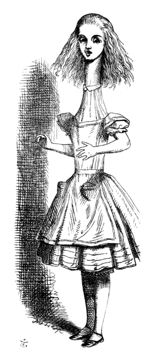

Chapter II
The Pool of Tears

'Curiouser and curiouser!' cried Alice. She was so much surprised, that for the moment she quite forgot how to speak good English.
'Now I'm opening out like the largest telescope that ever was! Good-bye, feet!'
And oh, what nonsense I'm talking! Just then her head struck against the roof of the hall: in fact she was now more than nine feet high.
She took up the little golden key and hurried off to the garden door.
Poor Alice! It was as much as she could do, lying down on one side, to look through into the garden with one eye; but to get through was more hopeless than ever.
She sat down and began to cry again.
'You ought to be ashamed of yourself,' said Alice, 'a great girl like you, to go on crying in this way!'
Soon her eye fell on a little glass box that was lying under the table: she opened it, and found in it a very small cake, on which the words 'EAT ME' were beautifully marked in currants.
'Well, I'll eat it,' said Alice, 'and if it makes me grow larger, I can reach the key; and if it makes me grow smaller, I can creep under the door.'
So she set to work, and very soon finished off the cake.
'Curiouser and curiouser!' cried Alice again.
Now she was so much surprised, that for the moment she quite forgot how to speak good English; and before she had time to stop herself she was shrinking rapidly.
She was now only ten inches high, and her face brightened up at the thought that she was now the right size for going through the little door into that lovely garden.
After a while, finding that nothing more happened, she decided on going into the garden at once; but, alas for poor Alice! when she got to the door, she found she had forgotten the little golden key.
When she went back to the table for it, she found she could not possibly reach it.
Soon her eye fell on the pool of tears she had cried when she was nine feet high. It was now quite a large pool all around her.
After a time she heard a little pattering of feet in the distance, and she hastily dried her eyes to see what was coming.
It was the White Rabbit returning, splendidly dressed, with a pair of white kid gloves in one hand and a large fan in the other.
The Rabbit started violently, dropped the white kid gloves and the fan, and skurried away into the darkness as hard as he could go.
Alice took up the fan and gloves, and as the hall was very hot, she kept fanning herself all the time she went on talking.
Very soon she noticed that she was shrinking again, and in another moment splash! she was up to her chin in salt water.
She soon made out that she was in the pool of tears which she had wept when she was nine feet high.
As she swam about, she met a Mouse in the pool and tried to speak to it. At last the Mouse said, in a low trembling voice, 'Let us get to the shore, and then I'll tell you my history, and you'll understand why it is I hate cats and dogs.'
There were a Duck and a Dodo, a Lory and an Eaglet, and several other curious creatures. Alice led the way, and the whole party swam to the shore.